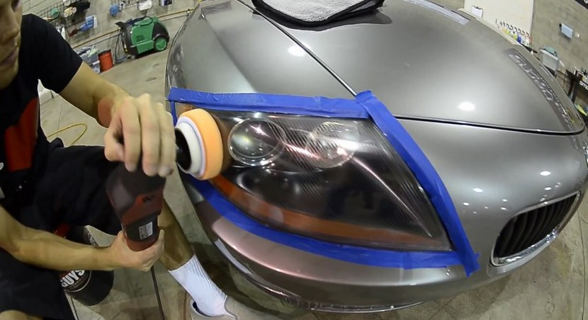

¿Como puedo Saber que estan deteriorados?
Hay tres maneras de detectar que nuestros faros están deteriorados. Para los más despistados probablemente sea en la ITV cuando el operario de turno nos indique que nuestros faros tienen un problema. Y el problema rebotará justo hacia nuestra cartera, pues una iluminación defectuosa es una falta.
